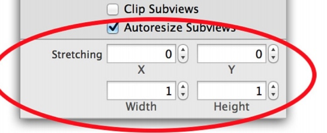

注意点:
1. contentsScale 并不关心屏幕的拉伸因素而总是默认为1.0。如果我们想以Retina的质量来渲染图层，我们就得手动设置图层的 contentsScale 属性。
textLayer.contentsScale = [UIScreen mainScreen].scale;
2.
图层、视图
iOS中所有的视图都从UIView中派生而来。UIView 可以处理触摸事件，可以支持基于Core Graphics绘图，可以做仿射变换（例如旋转或者缩放），或者简单的类似于滑动或者渐变的动画。
CALay与UIView最大的不同是不处理用户的交互，并不清楚具体的响应链（iOS通过视图层级关系用来传送触摸事件的机制），于是它并不能够响应事件，即使它提供了一些方法来判断是否一个触点在图层的范围之内
每一个 UIView 都有一个 CALayer 实例的图层属性，视图的职责就是创建并管理这个图层，以确保当子视图在层级关系中添加或者被移除的时候，他们关联的图层也同样对应在层级关系树当中有相同的操作
实际上视图的这些背后关联的图层才是真正用来在屏幕上显示和做动画， UIView 仅仅是对它的一个封装，提供了一些iOS类似于处理触摸的具体功能，以及CoreAnimation底层方法的高级接口。
实际上，这里并不是两个层级关系，而是四个，每一个都扮演不同的角色，除了
视图层级和图层树之外，还存在呈现树和渲染树。
我们用CALayer处理UIView没有暴露出来的功能(UIView没有响应的高级接口，我们只能介入底层):
- 阴影，圆角，带颜色的边框
- 3D变换
- 非矩形范围
- 透明遮罩
- 多级非线性动画
标准的Xcode项目模板并没有包含Core Animation相关头文件。所以如果我们不给项目添加合适的库，是不能够使用任何图层相关的方法或者访问它的属性。所以首先需要添加QuartzCore框架
视图中的子视图就是图层中的子图层
寄宿图
CALayer的寄宿图（即图层中包含的图）
contents属性
CALayer 有一个属性叫做contents，这个属性的类型被定义为id，意味着它可以是任何类型的对象。但是,在实践中，如果你给contents赋的不是CGImage，那么你得到的图层将是空白的。
实际上真正应该赋值的类型是CGImageRef,它是指向CGImage的指针。
UIImage有一个CGImage属性，它返回一个"CGImageRef",如果你想把这个值直接赋值给CALayer的 contents ，那你将会得到一个编译错误。因为CGImageRef并不是一个真正的Cocoa对象，而是一个Core Foundation类型。
/**
尽管Core Foundation类型跟Cocoa对象在运行时貌似很像（被称作toll-freebridging），
他们并不是类型兼容的，不过你可以通过bridged关键字转换。
*/
layer.contents = (__bridge id)image.CGImage;
/**
利用CALayer在一个普通的UIView中显示了一张图片。这不是一个UIImageView，它不是我们通常用来展示图片的方法。
*/
contentGravity
我们这样设置的图片也会适应视图拉伸，CALay也有个属性contentsGravity,它是个NSString类型，
类似于UIView的contentMode，contentsGravity 的目的是为了决定内容在图层的边界
中怎么对齐，我们将使用kCAGravityResizeAspect，它的效果等同于
UIViewContentModeScaleAspectFit.
self.layerView.layer.contentsGravity = kCAGravityResizeAspect;
contentScale
contentsScale属性其实属于支持高分辨率（又称Hi-DPI或Retina）屏幕机制的一部分。它用来判断在绘制图层的时候应该为寄宿图创建的空间大小，和需要显示的图片的拉伸度（假设并没有设置contentsGravity属性）。UIView有一个类似功能但是非常少用到的contentScaleFactor属性。
如果contentsScale设置为1.0，将会以每个点1个像素绘制图片，如果设置为2.0，则会以每个点2个像素绘制图片，这就是我们熟知的Retina屏幕。这并不会对我们在使用kCAGravityResizeAspect时产生任何影响，因为它就是拉伸图片以适应图层而已，根本不会考虑到分辨率问题。但是如果我们把contentsGravity设置为kCAGravityCenter（这个值并不会拉伸图片），那将会有很明显的变化
self.layerView.layer.contentsGravity = kCAGravityCenter;
self.layerView.layer.contentsScale = image.scale;
/**
当用代码的方式来处理寄宿图的时候，一定要记住要手动的设置图层的 contentsScale 属性
，否则，你的图片在Retina设备上就显示得不正确啦
*/
layer.contentsScale = [UIScreen mainScreen].scale;
maskToBounds
UIView有一个叫做clipsToBounds的属性可以用来决定是否显示超出边界的内容，CALayer对应的属性叫做masksToBounds
contentRect
CALayer的 contentsRect 属性允许我们在图层边框里显示寄宿图的一个子域。
它使用单位坐标,指定0到1之间是一个相对值（像素和点就是绝对值）,相对于寄宿图的尺寸
默认contentRect是{0，0，1，1},着整个寄宿图默认都是可见的，如果我们指定一个小一点的矩形，图片就会被裁剪
事实上给 contentsRect 设置一个负数的原点或是大于{1, 1}的尺寸也是可以的。这种情况下，最外面的像素会被拉伸以填充剩下的区域。
iOS中的坐标系统:
- 点 —— 在iOS和Mac OS中最常见的坐标体系。点就像是虚拟的像素，也被称作逻辑像素。在标准设备上，一个点就是一个像素，但是在Retina设备上，一个点等于2*2个像素。iOS用点作为屏幕的坐标测算体系就是为了在Retina设备和普通设备上能有一致的视觉效果。
- 像素 —— 物理像素坐标并不会用来屏幕布局，但是仍然与图片有相对关系。UIImage是一个屏幕分辨率解决方案，所以指定点来度量大小。但是一些底层的图片表示如CGImage就会使用像素，所以你要清楚在Retina设备和普通设备上，他们表现出来了不同的大小。
- 单位 —— 对于与图片大小或是图层边界相关的显示，单位坐标是一个方便的度量方式， 当大小改变的时候，也不需要再次调整。单位坐标在OpenGL这种纹理坐标系统中用得很多，Core Animation中也用到了单位坐标。
contentsCenter
contentsCenter是一个CGRect,定义了一个固定的边框和一个在图层上可拉伸的区域.
默认是{0，0，1，1},即当视图大小改变时会均匀大小的拉伸,但是当我们改变这个rect后,横向或者纵向拉伸图片时就只会拉伸我们选定的区域（是rect的区域被拉伸而不是rect之外区域被拉伸）
工作起来的效果和UIImage里的-resizableImageWithCapInsets:方法效果非常类似，只是它可以运用到任何寄宿图，甚至包括在Core Graphics运行时绘制的图形
注意
这个属性我们是可以在xib中直接设置的:

Custom Drawing
当然我们设置寄宿图的方法不仅仅只有给content赋值CGImage，我们也可以用Core Grapic直接绘制。我们可以通过继承UIView并且重写-drawRect:方法进行自定义绘制
drawRect方法并没有默认实现，因为对于UIView来说,寄宿图并不是必须的，但是当UIView检测到-drawRect:被调用就会为视图分配一个寄宿图，寄宿图的像素尺寸等于视图大小乘以 contentsScale的值。如果不需要寄宿图就没必要创建这个方法会造成cpu、内存浪费，空的方法也不行.
当视图在屏幕上出现的时候 -drawRect:方法就会被自动调用。-drawRect: 方法里面的代码利用Core Graphics去绘制一个寄宿图，然后内容就会被缓存起来直到它需要被更新(通常是因为开发者调用了-setNeedsDisplay方法,尽管影响到表现效果属性值被更改时，视图类型会自动重绘，如bounds属性)。
虽然-drawRect:方法是一个UIView方法，事实上都是底层的CALayer安排了重绘工作和保存了因此产生的图片。
CALayeDelegate
CALaye的代理
这个并不常用
实现了 CALayerDelegate 协议，当CALayer需要一个内容特定的信息时，就会从协议中请求.
当需要被重绘的时候，CALayer会请求他的代理给他一个寄宿图来显示.
//如果想直接设置contents属性时,可以这样
-(void)displayLayer:(CALayerCALayer *)layer;
//如果代理不实现 -displayLayer: 方法 就会调用
- (void)drawLayer:(CALayer *)layer inContext:(CGContextRef)ctx;
/**
在调用这个方法之前CALayer创建一个合适尺寸的空寄宿图（尺寸由bounds
和contentScale决定）和一个coreGraphic绘制的上下文环境ctx
*/
举个栗子:
CALayer *blueLayer = [CALayer layer];
[self.layerView.layer addSublayer:blueLayer];
[blueLayer display];//强制layer重绘
//代理
- (void)drawLayer:(CALayer *)layer inContext:(CGContextRef)ctx
{
//draw a thick red circle
CGContextSetLineWidth(ctx, 10.0f);
CGContextSetStrokeColorWithColor(ctx, [UIColor redColor].CGColor);
CGContextStrokeEllipseInRect(ctx, layer.bounds);
}
注意
我们在blueLayer上显式地调用了-display。不同于UIView，当图层显示在屏幕上时，CALayer不会自动重绘它的内容。它把重绘的决定权交给了开发者。
除非你创建了一个单独的图层，你几乎没有机会用到CALayerDelegate协议,因为当UIView创建了它的宿主图层时，它就会自动地把图层的delegate设置为它自己，并提供了一个-displayLayer:的实现
当使用寄宿了视图的图层的时候，你也不必实现-displayLayer:和-drawLayer:inContext:方法来绘制你的寄宿图。通常做法是实现UIView的-drawRect:方法，UIView就会帮你做完剩下的工作，包括在需要重绘的时候调用-display方法。